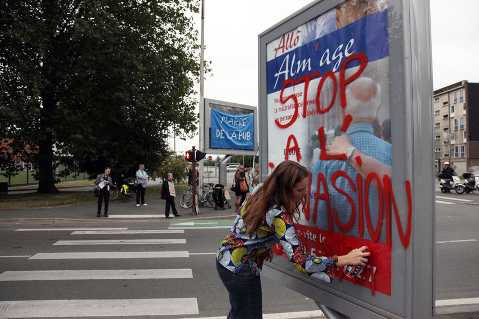

| Site dédié à la publication d'informations communiquées par le Collectif des déboulonneurs. En aucun cas ce site n'appelle à des actions illégales. | ||
 |
||
|
Accueil du site > Lille > Communiqué de presse du Collectif des déboulonneurs de Lille
14 octobre 2009 CONTRE L’INVASION PUBLICITAIRE DES VILLES ET DES CAMPAGNES FRANCAISESConvocation d’un barbouilleur devant le délégué du procureur, suivi le jour-même du 24ème BARBOUILLAGE ANTIPUB En octobre 2008, six barbouilleur-ses du Collectif des déboulonneurs de Lille étaient convoqués devant le délégué du procureur. Ils refusaient alors de régler les sommes demandées par l’afficheur J.C Decaux. Le collectif estime en effet que leur acte de désobéissance civile correspond à une "Légitime réponse", comme l’a inscrit le barbouilleur, aujourd’hui convoqué devant le délégué du procureur, pour un barbouillage effectué au grand jour, de manière assumée et non-violente, en janvier 2009. RDV LE MERCREDI 28 octobre 2009 A 8h30, devant le Palais de Justice, avenue du Peuple belge, pour la convocation du barbouilleur devant le délégué du procureur. A 18H30, devant le Conservatoire, côté avenue du Peuple belge, en face du Palais de Justice, pour le bâchage et le barbouillage de panneaux publicitaires. RENSEIGNEMENTS : COLLECTIF DES DEBOULONNEURS DE LILLE Contact : Aless 03 20 93 87 37 deboulonneurs_lille[a]no-log.org Jusqu’à gain de cause, c’est-à-dire l’obtention de la réduction du format de l’affichage publicitaire à 50x70cm, le Collectif des déboulonneurs entrera inlassablement et nationalement en désobéissance civile pour dénoncer les ravages de la publicité. NON-VIOLENCE – LEGITIME REPONSE – DESOBEISSANCE CIVILE Nous contestons vivement le système publicitaire, exigeons un débat public, et avons des propositions concrètes. Nous revendiquons une taille maximale d’affichage de 50 cm par 70 cm (comme l’affichage associatif et politique), accompagnée d’une contrainte stricte de densité et la suppression des panneaux énergétivores (lumineux, animés, etc...), ce qui permettrait de marquer un premier coup d’arrêt à l’expansion du système publicitaire. Dans ce sens, toutes les 4èmes semaines du mois, nationalement, inlassablement, jusqu’à gain de cause, nous dégraderons en public, de manière assumée et non-violente les panneaux publicitaires par barbouillage (inscriptions à la peinture). 
Le Collectif des déboulonneurs lance une action d’envergure nationale contre le système publicitaire. Il s’est créé en 2005, en région parisienne. Il invite les personnes de bonne volonté à en créer un dans leur propre ville, au plus vite, pour se lancer dans l’action non-violente qui est présentée dans cet écrit. Ce collectif se propose de déboulonner la publicité, c’est-à-dire de la faire tomber de son piédestal, de détruire son prestige. Non pas de la supprimer, mais de la mettre à sa place, pour qu’elle soit un outil d’information au service de toutes les activités humaines. Cette action, contre le système publicitaire et notamment l’affichage, se répétera chaque 4ème semaine du mois, et est en cours de généralisation au niveau national. La tactique ? La dégradation assumée et non-violente en barbouillant des panneaux publicitaires en public. L’objectif ? Une taille maximale d’affichage de 50 cm par 70 cm, accompagnée d’une contrainte de densité et de la suppression des panneaux lumineux et animés. |
|
Site utilisant SPIP - Hébergement Ouvaton
|